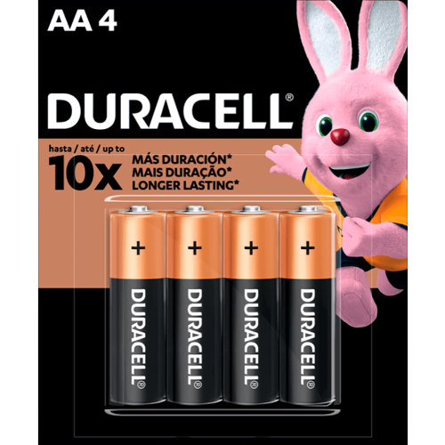
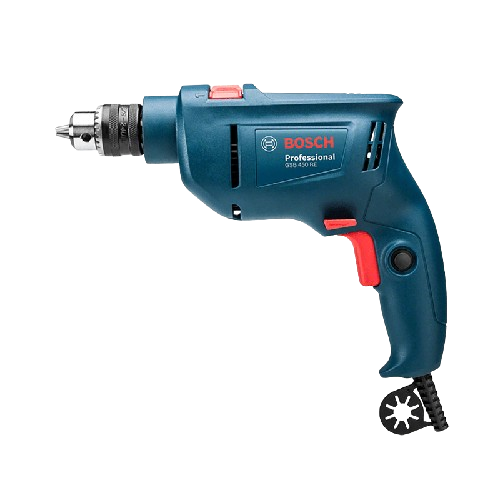
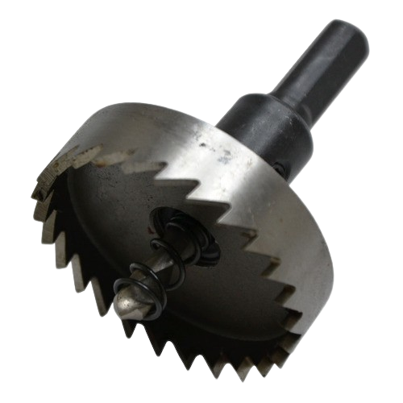

A Fechadura Digital FR101 da Intelbras é perfeita para ambientes residenciais, sua interface digital permite acessar os ambientes através de senha numérica. Aprenda como instalar a Fechadura Digital FR101 da Intelbras.
4 Pilhas AA
Furadeira
Serra copo para madeir
"Parafusadeira ou
Chave Philips"